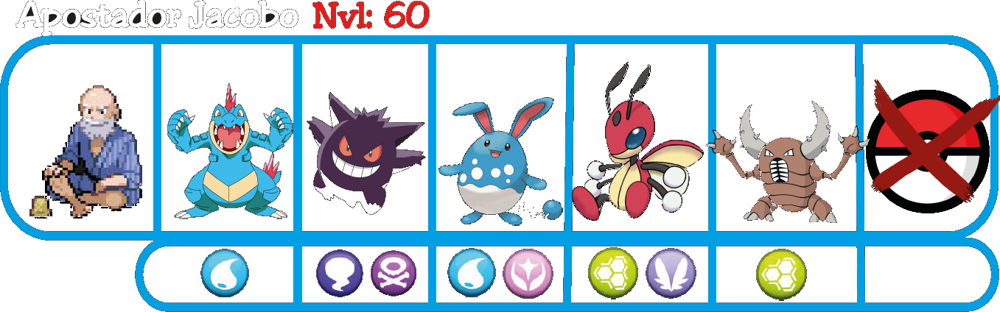
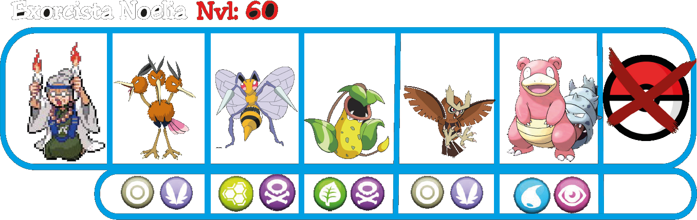
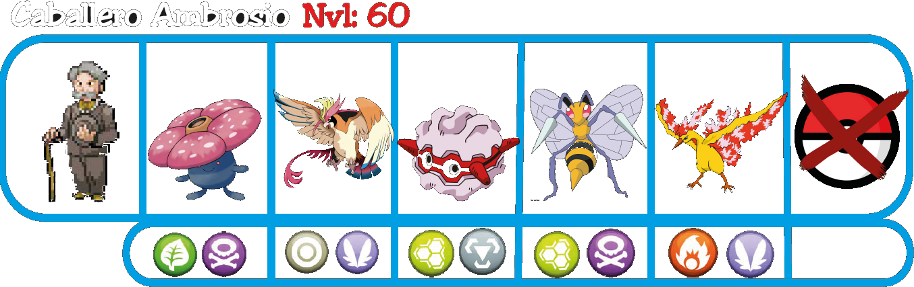

Bosque Oscuro
Nada más entrar al Bosque Oscuro, encontrarás un Charizard con un Oopa en la boca, forma parte de
la misión de Mayuri.
Tendrás que avanzar atravesando la oscuridad del bosque con la ayuda de las Gafas de Shinigami, que aumentarán tu campo de visión.
Después de usar la captura de zona, atraviesa el bosque en busca de objetos y enemigos, ayúdate con el mapa si lo necesitas.
Dentro del bosque encontrarás algunos enemigos que podrás derrotar:


Cuando hayas completado el bosque, llegarás a Ciudad Mondongo. Allí tendrás que dirigirte al Centro Comercial para buscar la entrada oculta del segundo piso, podrás observar una pequeña grieta en la pared y usando las Gafas de Shinigami, encontrarás la entrada oculta.
Grieta en el segundo piso del Centro comercial.
Después de usar las Gafas de Shinigami.